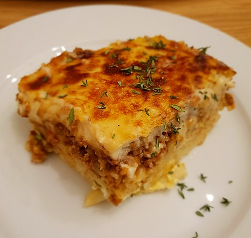

Pastitsio
Description
Pastitsio (Greek: παστίτσιο, pastítsio) is a Greek baked pasta dish with ground meat and béchamel sauce, with variations of the dish found in other countries of the Mediterranean Sea.
Ingredients
- 1kg broad maccaroni pasta.
- 1kg ground meat.
- 2 large oninions.
- 2 cups of crushed tomatoes.
- 1/2 olive oil
- 1/2 cup of butter.
- 10 cups of milk.
- 1 cup of butter.
- 1 cup flour.
- 8 eggs.
- 3 cups grated cheese.
Instructions
- Place ground meat with onion and very little water in a pot and
heat it for a short while until water is absorbed.
Put the oil and saute the ground meat, add salt and pepper.
Add tomato, and let the mix cook slowly.
- Prepare pasta:
In a large pot, boil water.
Drop the pasta in the water and add salt.
When they are cooked, drain the water from them.
- Prepare pastitsio basis in a pan.
put one layer of pasta in a pan, sprinkle with grated cheese
and add one evenly spread layer of ground meat sauce.
Lay the rest of the pasta on top, sprinkel more cheese and
add the 1/2 cup of melted butter.
- Prepare bechamel sauce
Add 1 cup of butter to a pot, heat until it melts and gets hot.
Add the flour and stir with wooden spatula.
Add milk stirring constantly to prevent clumping.
It is preferable to heat milk in advance, to avoid clumping.
- Next add the cheese (keep aside two tablespoons) and salt.
Once the cream thickens, remove from fire.
Beat the eggs well and and them slowly to the cream.
- add the bechamel to the pan
Empty the cream spreading it uniformly on the pan and sprinkle with
the two tablespoons of cheese you put aside. So the crust of the cream
will become crispy. Bake in medium oven for 30-40 min, until it takes
colour.